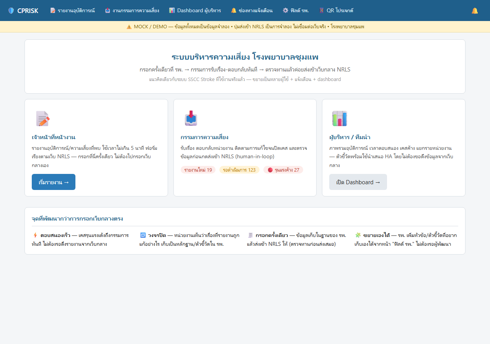
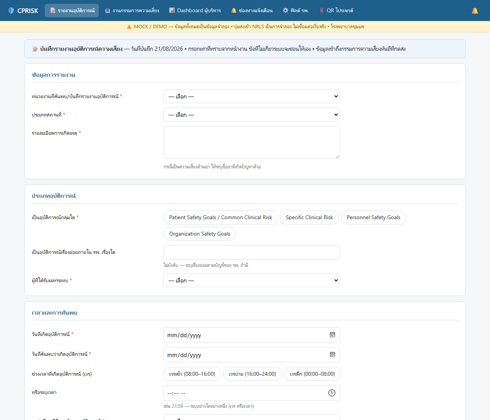
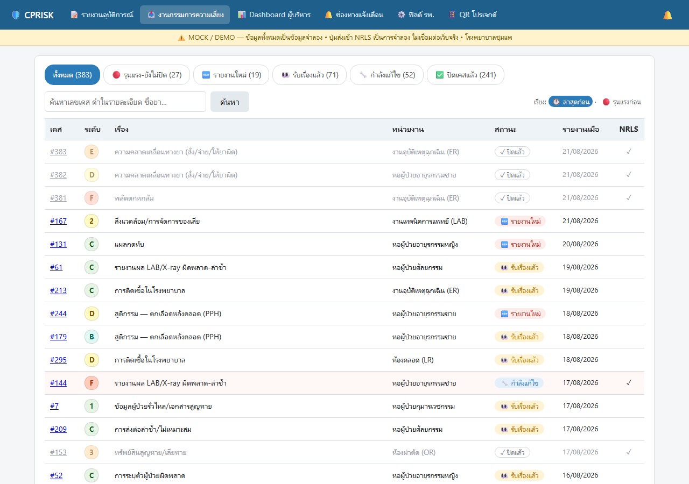
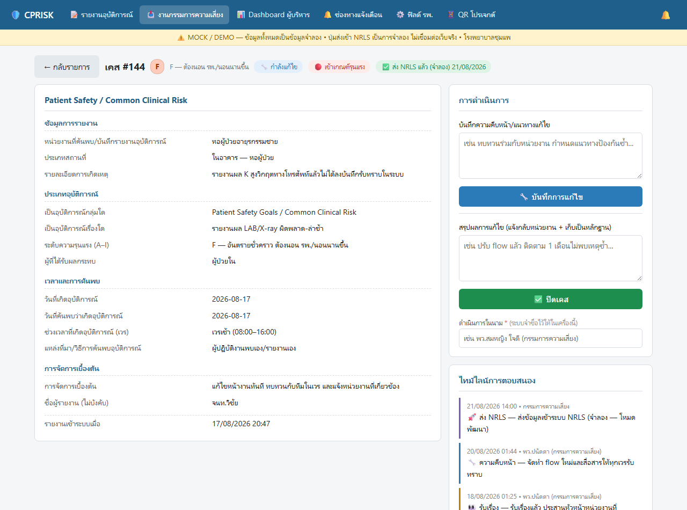
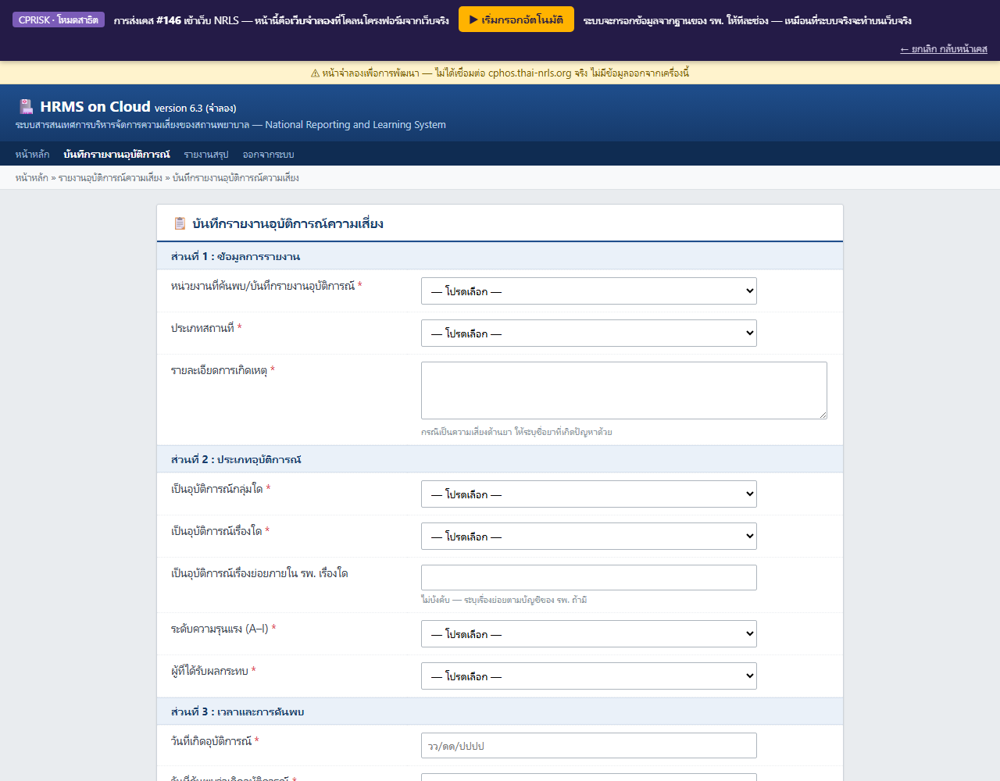
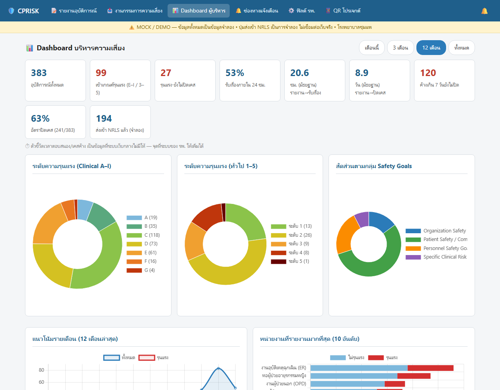

ระบบทำงานอย่างไร
1📝 หน้างานรายงาน
เจ้าหน้าที่ทุกหน่วยกรอกอุบัติการณ์ในฟอร์มเดียว จบใน ~5 นาที ฟอร์มเรียงตามโครงเว็บ NRLS จริง รายงานแบบไม่ระบุตัวตนได้
2📥 กรรมการรับเรื่อง-ตอบกลับ
เคสรุนแรงแจ้งเตือนทันที กรรมการรับเรื่อง บันทึกการแก้ไข และปิดเคสพร้อมไทม์ไลน์ — หน่วยงานเห็นว่าเรื่องที่รายงานถูกแก้อย่างไร
3🚀 ส่งเข้า NRLS แบบตรวจทานก่อน
ระบบเปิดเว็บกลางแล้วกรอกให้อัตโนมัติทีละช่อง กรรมการตรวจทานและเป็นคนกดบันทึกเองเสมอ (human-in-loop)
จุดที่พัฒนากว่าการกรอกเว็บกลางโดยตรง
⚡ ตอบสนองเร็ว — เคสรุนแรงเด้งถึงกรรมการในไม่กี่วินาที ไม่ต้องรอดึงรายงานจากเว็บกลาง
🔁 วงจรปิด — หน่วยงานเห็นผลการแก้ไข เก็บเป็นหลักฐานและตัวชี้วัดของ รพ. เอง
🧾 กรอกครั้งเดียว — ข้อมูลอยู่ในฐานของ รพ. แล้วระบบพากรอกเข้า NRLS ให้ ลดงานซ้ำซ้อน
📊 ตัวชี้วัดที่เว็บกลางไม่มี — เวลาตอบสนอง เคสค้าง อัตราปิดเคสรายหน่วยงาน พร้อมใช้นำเสนอ HA
🧩 ขยายเองได้ — รพ. เพิ่มหัวข้อ/ตัวชี้วัดที่อยากเก็บเองได้ทันที ไม่ต้องรอผู้พัฒนา
🔒 ข้อมูลอยู่ใน รพ. — ระบบออกแบบให้รันใน intranet ของโรงพยาบาล ไม่พึ่ง cloud ภายนอก
ภาพหน้าจอจากระบบ (ข้อมูลจำลอง)

หน้าแรก — แยกทางเข้าตามบทบาท: เจ้าหน้าที่หน้างาน / กรรมการความเสี่ยง / ผู้บริหาร
พร้อมตัวเลขงานค้างแบบเรียลไทม์

ฟอร์มรายงานอุบัติการณ์ — ฟิลด์ชุดเดียวกับเว็บ NRLS คำถามซ่อน/แสดงตามเงื่อนไขอัตโนมัติ
กรอกจบใน ~5 นาที รายงานแบบไม่ระบุตัวตนได้

งานกรรมการความเสี่ยง — เคสเรียงตามสถานะ/ความรุนแรง เคสรุนแรงที่ยังไม่รับเรื่องเด่นชัด
เคสที่ปิดแล้วจางลง ค้นหาได้ทั้งเลขเคส คำในรายละเอียด และชื่อยา

หน้าเคส — รับเรื่อง → บันทึกการแก้ไข → ปิดเคส ทุกขั้นลงไทม์ไลน์พร้อมชื่อผู้ดำเนินการและเวลา
เป็นหลักฐานการตอบสนองของ รพ.

ส่งเข้า NRLS (จำลอง) — ระบบเปิดหน้าเว็บกลางแล้วกรอกให้อัตโนมัติทีละช่อง
กรรมการตรวจทานก่อนกดบันทึกเองเสมอ — ในเดโมใช้เว็บจำลอง ไม่แตะเว็บราชการจริง

Dashboard ผู้บริหาร — สัดส่วนตามระดับความรุนแรงและกลุ่ม Safety Goals แบบเดียวกับ HRMS
บวกตัวชี้วัดที่เว็บกลางไม่มี: เวลารับเรื่อง เวลาปิดเคส และเคสค้างเกินกำหนด รายหน่วยงาน
สถานะโครงการ
- ✅ Mock ครบวงจร: ฟอร์ม → คิวกรรมการ → ปิดเคส → ส่ง NRLS (จำลอง) → dashboard
- ✅ ผ่านการทดสอบการใช้งาน (blind usability + UX review) และปรับปรุงตามผลแล้ว
- 🚧 ขั้นถัดไป: เชื่อม NRLS จริงแบบ human-in-loop, ระบบผู้ใช้/สิทธิ์ 3 บทบาท, ช่องทางแจ้งเตือน (ตามที่ผู้บริหารเลือก), export รายงาน HA
ขอดูเดโมสด
เดโมรันบนเครื่องผู้พัฒนา/เครื่องใน รพ. (ไม่มีเวอร์ชันออนไลน์ — ข้อมูลระบบจริงต้องอยู่ใน รพ. เท่านั้น)
ติดต่อผู้พัฒนาเพื่อนัดดูเดโม หรือรันเองจากซอร์สโค้ด: ติดตั้ง Python + Flask
แล้วดับเบิลคลิก app\start.bat
🔒 โครงการนี้ไม่มีข้อมูลผู้ป่วยจริงทั้งใน repo และในเดโม —
ข้อมูลทั้งหมดเป็นข้อมูลจำลองที่สร้างขึ้นเพื่อการพัฒนา